Fowl Language Stationery
An original creative brand built around bird behavior, ornithological names, language, and irreverent humor. A published coloring book brings its character development and visual storytelling into print; stationery collections remain in development.
From bird puns to a coloring book.
Fowl Language Stationery Coloring Book: A Coloring Book for People Out of Clucks to Give brings together original character concepts, comedic copy, AI-assisted illustration development, page composition, and independent publishing.
Work included concept selection, iterative visual review, preparing an 8.5 × 11-inch paperback interior, coordinating a cover, and navigating Amazon KDP publication. Role: concept, naming, writing, creative direction, content selection, review, layout decisions, and independent publishing.
Rockin’ Robin: Seven Birds, Seven Colorways, One Remix
A seven-member fictional bird band developed into a proposed family of coordinated stationery sets, with a customizable special edition inspired by Weird Owl Yankovic.
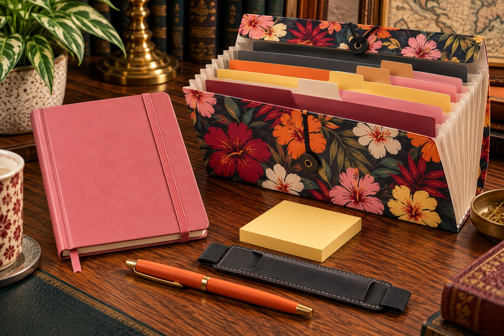
A repeatable product system
Seven musicians each have a designated color. Standard sets include a compact journal, coordinating pen, compatible leather pen sleeve, sticky notes, and three matching folders. The Weird Owl edition lets customers mix colors across components and replaces the folders with a Hawaiian-print accordion file. These are functional specifications and approved concept mockups, not manufactured merchandise.
Creative direction: Define the assortment, evaluate inconsistent mockups, reference functional products, and resolve the approved visual directions.
More from the flock.
Different applications of the brand’s humor, character design, and product development. All examples below are concepts.
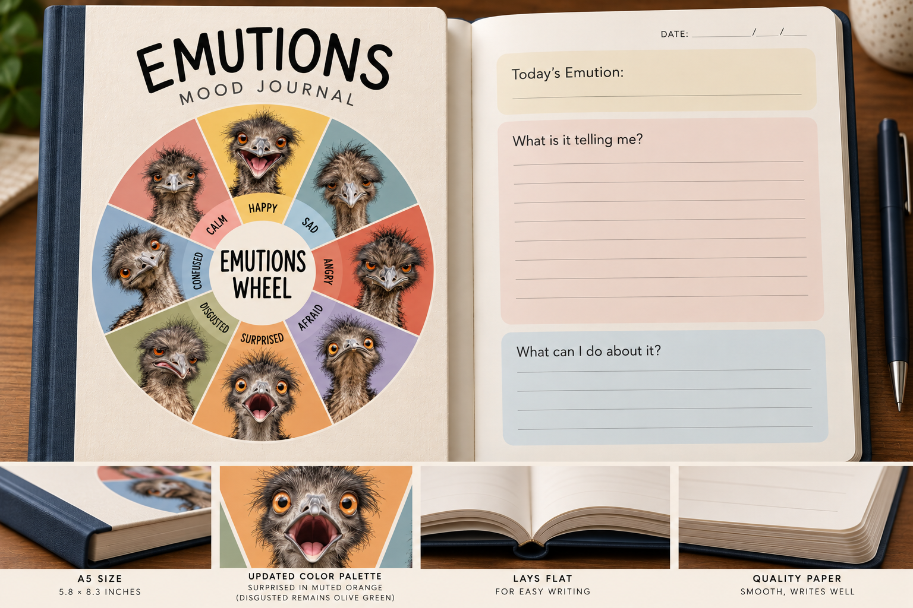
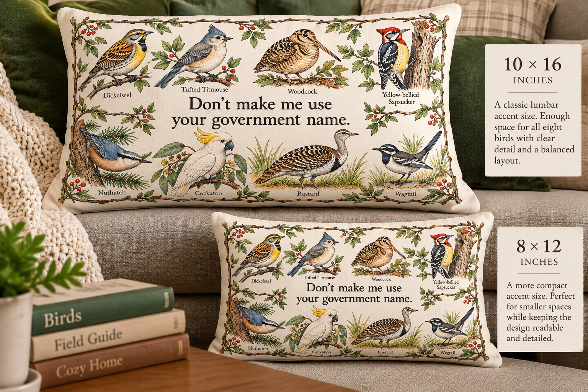
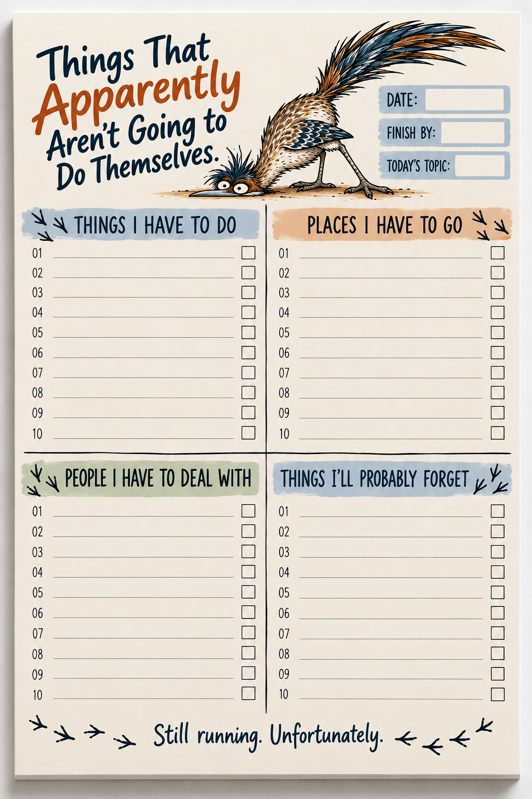
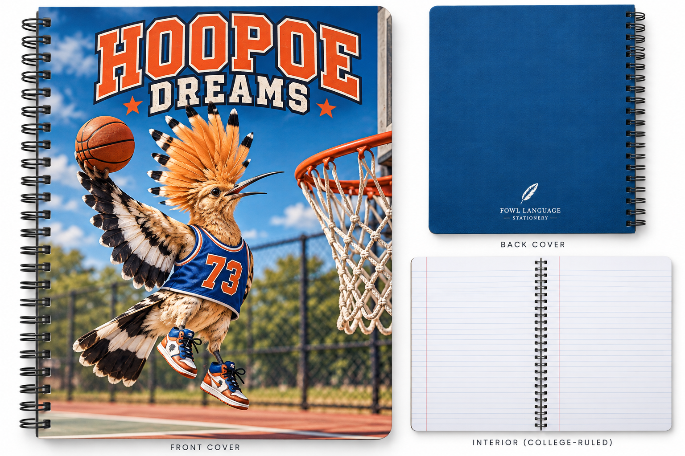
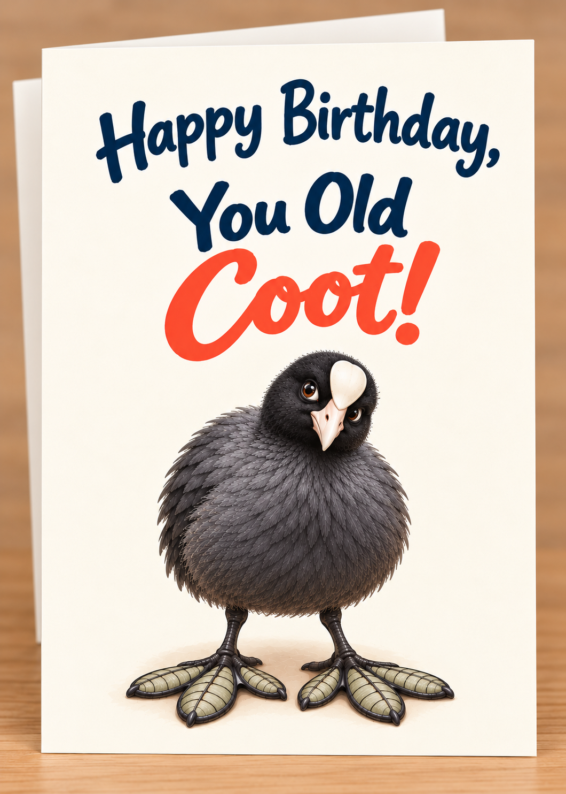
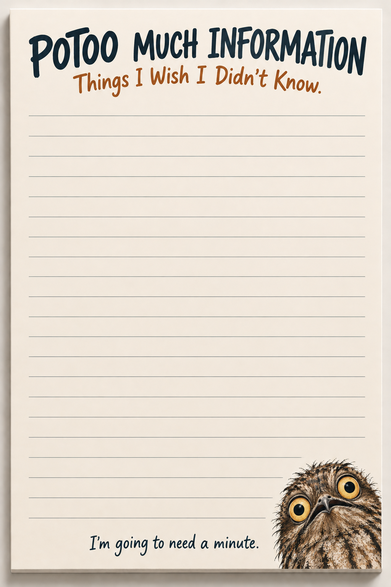
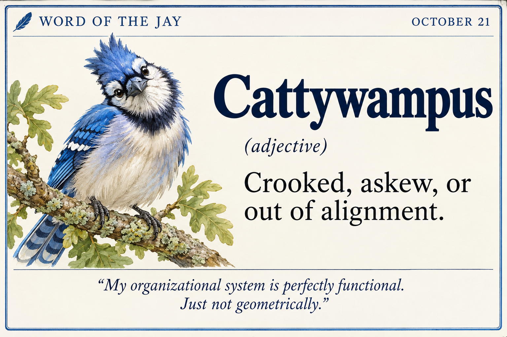
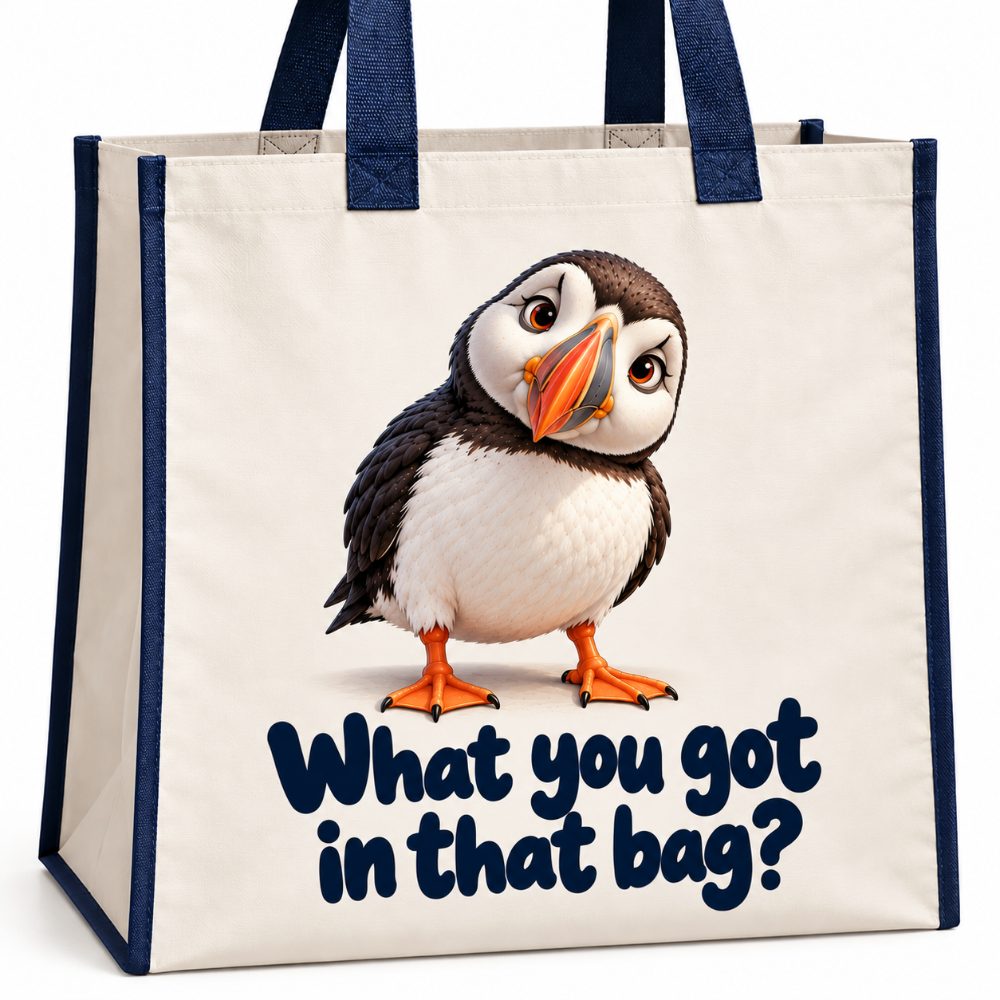
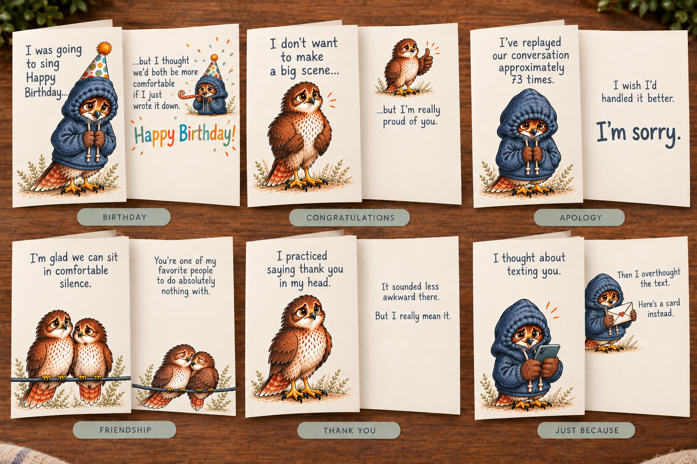
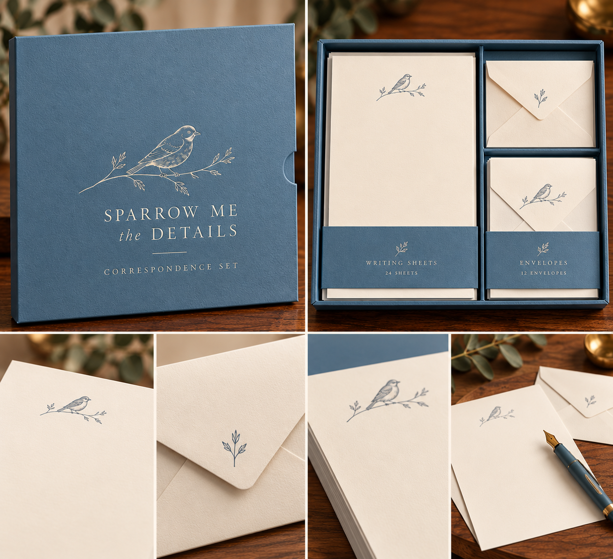
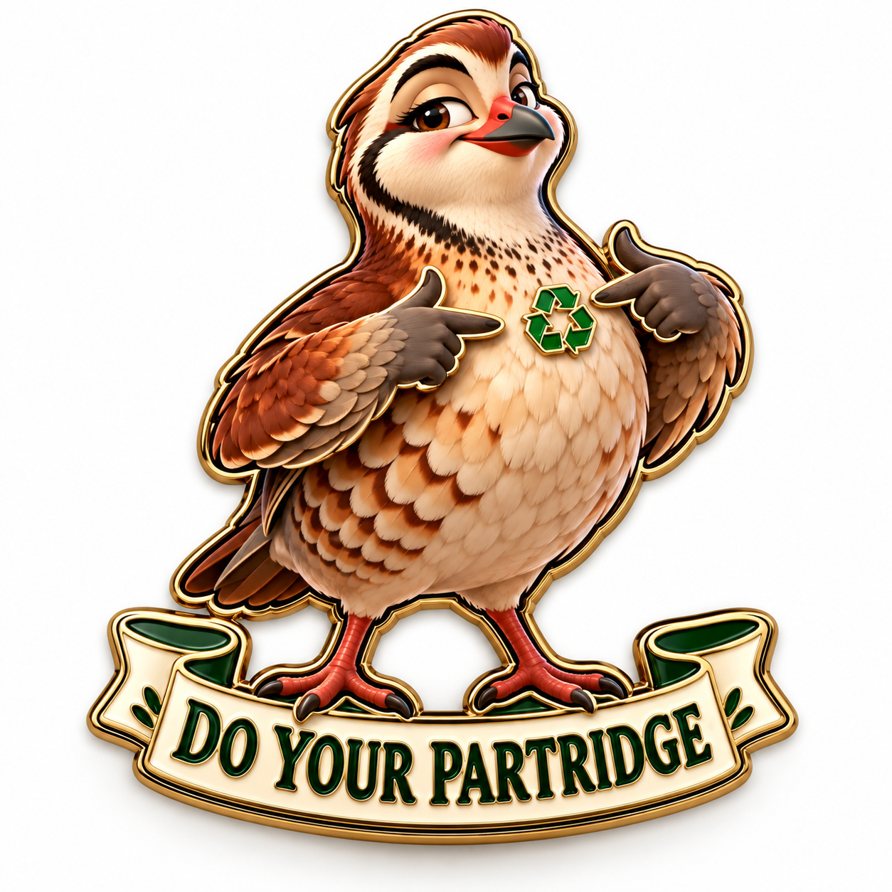
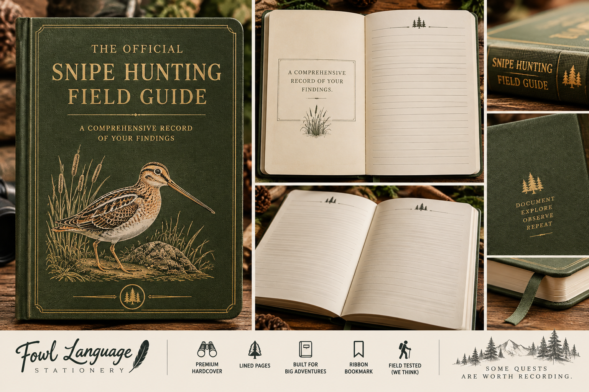
What the work demonstrates
Brand and collection architecture; product-format selection; visual and verbal identity; audience-aware copy; functional specifications; concept-to-mockup development; iterative art direction; and independent book publishing.
Images are AI-assisted concept visuals. The coloring book is published; stationery concepts are not represented as manufactured, sold, or market validated.